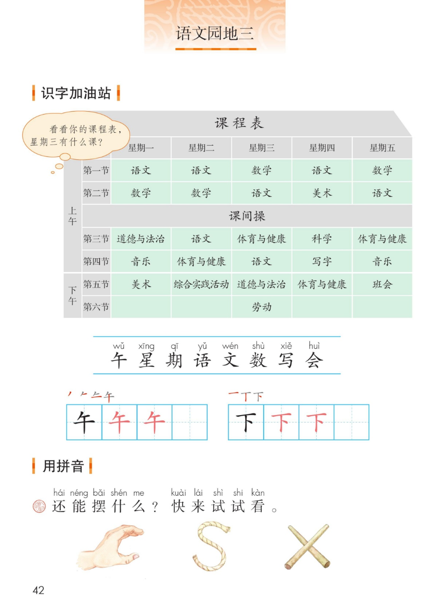
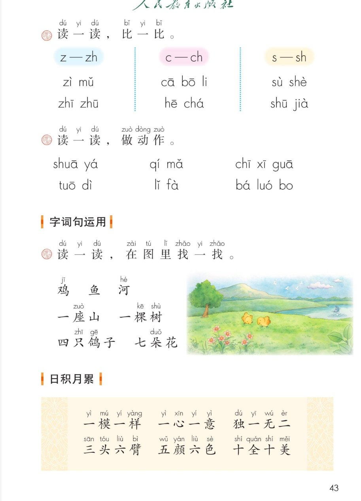

×
🔊 手机听不到声音怎么办？
① 先把手机
媒体音量调大 ，确认没开静音、没连蓝牙耳机；在微信里打开的，点右上角「⋯ → 用浏览器打开」。
② 还是没声音？到应用商店免费下载
Microsoft Edge 浏览器 （它自带朗读发声），用它打开本页面就能出声。
③ 换了 Edge 仍然没声音，说明这部手机的
硬件/系统不支持 网页朗读（多为老旧机型）；近几年买的新手机一般都能正常播放。
→ 打开声音自检
统编版 · 一年级上册 · 第三单元 · 语文园地三
语文园地三
识字加油站 · 用拼音 · 字词句运用 · 日积月累 · 和大人一起读
会认 8 字 会写 2 字 平翘舌比一比 闯关 8 题
这个园地学什么： 认识课程表上的 8 个字，写好「午、下」；用小手和小绳摆一摆字母；
分清平舌音 z c s 和翘舌音 zh ch sh，边读边做动作；在图里找一找鸡、鱼、河；
积累 6 个带数字的成语；再和大人一起读问答歌《谁会飞》。
课本第 42 页 点格子听读音，点一行读一行
看看你的课程表： 星期三有什么课？照着课本的课程表找一找、说一说。📋
课 程 表
星期一 星期二 星期三 星期四 星期五 上午
语文 语文 数学 语文 数学
数学 数学 语文 美术 语文
上午 课 间 操 上午
道德与法治 语文 体育与健康 科学 体育与健康
音乐 体育与健康 语文 写字 音乐
下午
美术 综合实践活动 道德与法治 体育与健康 班会
劳动
认一认，课程表里的字
午 星期 语文 数 写 会 —— 都藏在课程表里！
课本第 42 页田字格 先看笔顺，再动笔
课本第 42 页 动手摆一摆，还要想一想
还能摆什么？快来试试看
小手摆出 c ，绳子弯出 s ，小棒交叉摆出 x ——你还能摆什么？✋
课本第 43 页 平舌头轻又短，翘舌头往上翘
怎么分： z c s 是平舌音（舌尖平放），zh ch sh 是翘舌音（舌尖上翘）。照着镜子读一读。👅
课本第 43 页 点卡片，跟着一起做动作
课本第 43 页 点卡片听读，再回课本图里找一找
课本图里都有： 两只鸡 在草地上、一条鱼 在河 里游、远处一座 山 、旁边一棵 树 、天上四只 鸽子 、七朵 花 。🌸
课本第 43 页 点一张读一张，再连起来背
🎵 6 个成语连读
成语小卡
每个成语里都藏着数字 ：一、二、三、五、六、十……你还能说出带数字的成语吗？比如「四面八方」。🔢
💡 成语是固定词组 ，一般四个字，意思常常不是字面相加，要多读多记。
课本第 44 页 问一句答一句，再和大人一问一答
🎵 全文连读
🙋 一问一答读
问答歌真有趣： 上面问、下面答。你也能编一段——谁会跳？青蛙会跳。 和大人一起编一段、读一读。🐴
点题目可以听题，点选项就判对错，答完自动算分
已经答 0 题，答对 0 题。
点图放大

第 42 页 · 课程表 · 摆一摆

第 43 页 · 比一比 · 做动作 · 找一找 · 日积月累